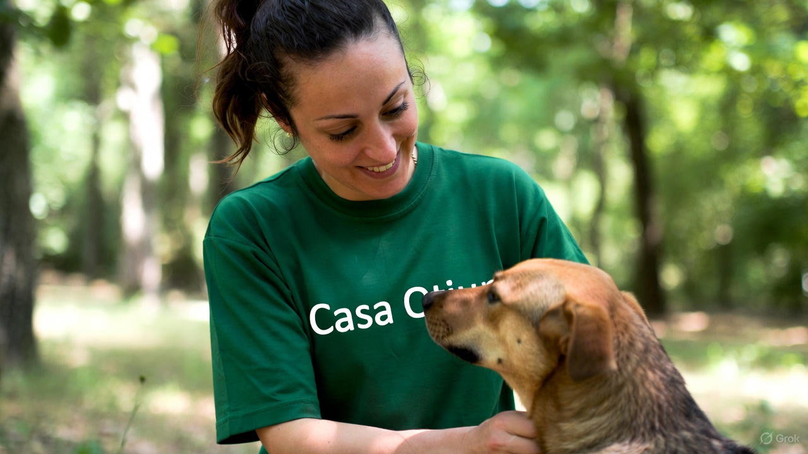
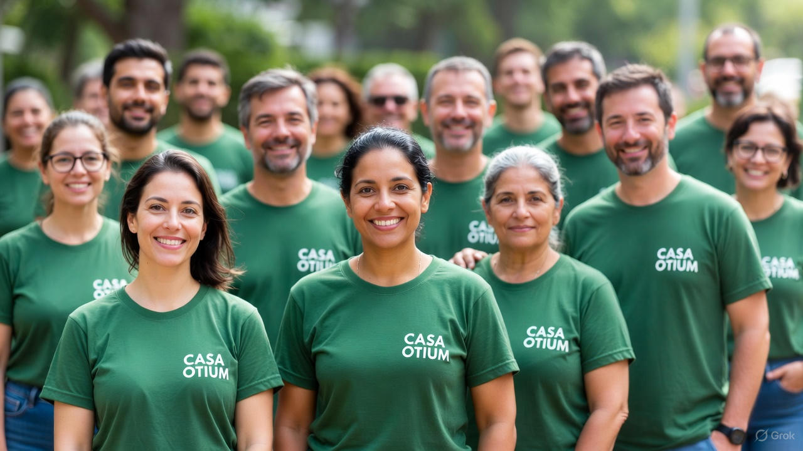

Il cuore del nostro rifugio
I nostri volontari sono il cuore del rifugio: ogni giorno dedicano tempo, energie e cura per garantire a ogni creatura — reale o fantastica — un luogo sicuro dove sentirsi amata.

I nostri volontari sono il cuore del rifugio: ogni giorno dedicano tempo, energie e cura per garantire a ogni creatura — reale o fantastica — un luogo sicuro dove sentirsi amata.

Molti animali vivono in condizioni difficili, senza cure e senza protezione. Ogni adozione e ogni volontario rappresentano un passo concreto verso un futuro migliore per loro.
Il nostro obiettivo è trasformare la tristezza in speranza:
Crediamo che ogni creatura, grande o piccola, comune o straordinaria, abbia diritto a una casa sicura e a un futuro sereno. La nostra missione è dare voce a chi non può chiederla.
